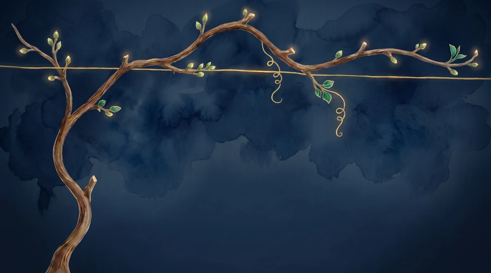

Meu Progresso
Safra 1 · Semana 1
Tudo pronto para o primeiro broto.
Comece pelo Dia 1.


0
dias de estudo
0
histórias da Lily
0
cartões no Anki
0 / 12
colheitas
Jornada até a colheita completa0 / 60 passos diários
Sua colheita
Cada semana completa acrescenta um cacho.